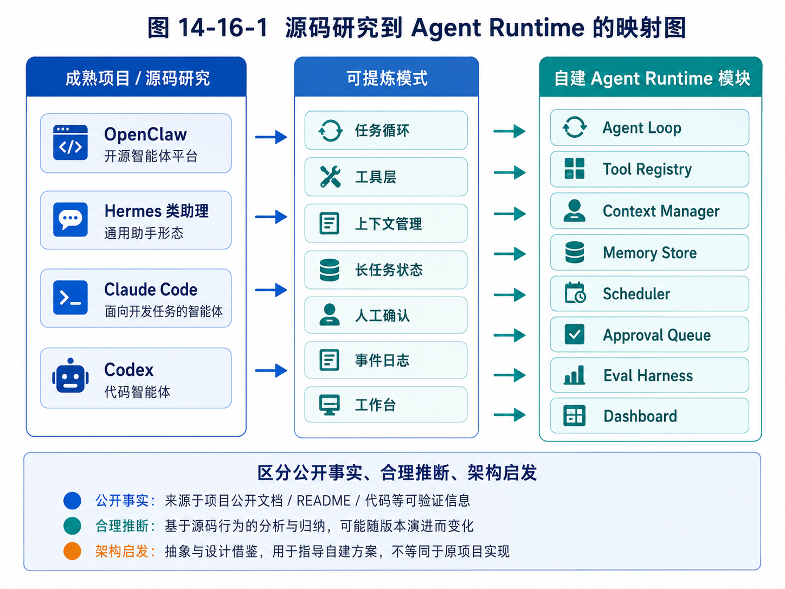

第 16 章：从源码中提炼自己的 Agent Runtime
设计自己的 Agent Runtime 时，最重要的是把前面观察到的成熟模式映射成清晰模块。

图 14-16-1 源码研究到 Agent Runtime 的映射图
前两章完成了两件事。第 14 章给出了一套阅读 Agent 项目源码的方法，第 15 章从 OpenClaw、Hermes 类助理、Claude Code 和 Codex 等代表性形态中提炼了可迁移设计模式。现在，我们要把这些经验收敛到一个更具体的问题：如果要设计自己的 Agent Runtime，应该长什么样？
这里的 Agent Runtime，不是某个框架的简单封装，也不是一个只能跑 Demo 的循环，而是一套支撑 Agent 长期、可控、可观测执行任务的基础设施。
它要回答：
任务如何进入系统？
Agent 如何决定下一步？
工具如何注册和执行？
上下文如何构造？
状态如何保存？
记忆如何使用？
长任务如何调度？
高风险动作如何审批？
执行过程如何追踪？
失败后如何恢复？
多个业务 Agent 如何复用同一底座？
本章不会追求一次设计出庞大系统。相反，我们会设计一套可演进的 Runtime：先能跑通最小闭环，再逐步增加工具、上下文、记忆、审批、调度、评估和工作台。这样的设计适合个人开发者，也适合后续交给 Codex 或其他代码 Agent 分阶段实现。
16.1 为什么需要自己的 Agent Runtime
有人可能会问：既然已经有 LangGraph、OpenAI Agents SDK、CrewAI、AutoGen 等框架，为什么还要设计自己的 Agent Runtime？
这里的“设计自己的 Runtime”不等于完全从零造轮子，也不等于拒绝框架。它的真正含义是：你要理解并掌握 Agent 系统的核心抽象，知道自己需要什么，再决定哪些部分用框架，哪些部分自己实现。
如果没有自己的 Runtime 思维，你很容易被框架牵着走。
例如，某个框架提供了多 Agent 对话，你可能就开始设计一堆角色互相聊天；某个框架提供图节点，你可能就把所有流程画成复杂图；某个框架提供工具调用，你可能就把所有 API 都暴露给模型。结果系统看起来很“Agent”，但真实业务价值并不清楚。
拥有 Runtime 思维后，你会先问：
我的任务是否需要长期状态？
是否需要人工审批？
是否需要工具权限控制？
是否需要多入口？
是否需要多 Agent？
是否需要后台调度？
是否需要记忆？
是否需要评估？
然后再选择实现方式。
自己的 Agent Runtime 至少有三点价值。
第一，形成稳定抽象。
框架会变化，但任务、状态、工具、上下文、记忆、审批、日志这些概念长期存在。你掌握这些抽象，就能跨框架迁移。
第二，贴合业务场景。
外贸 Agent、教育 Agent、代码 Agent 的工具、状态、审批规则完全不同。通用框架不可能替你定义业务对象。你需要自己的 domain model。
第三，便于工程演进。
从 Demo 到产品，最大的变化不是模型，而是周边机制：用户系统、权限、日志、调度、审批、评估、数据治理。如果一开始没有 Runtime 架构，后期会很难加。
因此，本章的目标不是发明一个新框架，而是定义一套你能理解、能实现、能扩展的 Agent Runtime 蓝图。
16.2 Runtime 的总体架构
一个实用的 Agent Runtime 可以分为八层：
1. Entry Layer：任务入口层
2. Task Layer：任务与状态层
3. Runtime Layer：执行循环层
4. Context Layer：上下文层
5. Tool Layer：工具层
6. Memory & Knowledge Layer：记忆与知识层
7. Control Layer：审批、安全与调度层
8. Observability & Eval Layer：可观测与评估层
可以画成下面的结构：
┌──────────────────────────────────────────────┐
│ Entry Layer │
│ CLI / Web / Chat / Scheduler / Webhook │
└───────────────────────┬──────────────────────┘
│ normalized event
┌───────────────────────▼──────────────────────┐
│ Task Layer │
│ Task / State / Event / Artifact / Checkpoint │
└───────────────────────┬──────────────────────┘
│ task state
┌───────────────────────▼──────────────────────┐
│ Runtime Layer │
│ Agent Loop / Planner / Executor / Stop Policy │
└─────────────┬───────────────┬────────────────┘
│ │
┌─────────────▼───────┐ ┌─────▼────────────────┐
│ Context Layer │ │ Tool Layer │
│ Prompt / Compression │ │ Registry / Executor │
│ Memory Injection │ │ Permission / Sandbox │
└─────────────┬───────┘ └─────┬────────────────┘
│ │
┌─────────────▼───────────────▼────────────────┐
│ Memory & Knowledge Layer │
│ Memory Store / RAG / Domain Data / Profiles │
└───────────────────────┬──────────────────────┘
│
┌───────────────────────▼──────────────────────┐
│ Control Layer │
│ Approval / Scheduler / Policy / Notification │
└───────────────────────┬──────────────────────┘
│
┌───────────────────────▼──────────────────────┐
│ Observability & Eval Layer │
│ Trace / Logs / Metrics / Replay / Eval Report │
└──────────────────────────────────────────────┘
这张图表达了一个重要原则：Agent Runtime 不是单个 loop，而是围绕任务执行的一整套基础设施。
最小版本可以只实现其中一部分，但架构上要给未来留下位置。
16.3 Entry Layer：任务入口层
任务入口层负责把外部输入转换成统一内部事件。
入口可以很多：
CLI：用户在终端输入任务。
Web：用户在工作台创建任务。
Chat：用户通过微信、Telegram、Slack、飞书发送消息。
Scheduler：系统定时触发任务。
Webhook：外部系统事件触发任务。
API：其他服务调用 Agent。
如果每个入口都直接调用 Runtime，系统会很快混乱。正确做法是先统一成 InputEvent：
from dataclasses import dataclass
from typing import Literal, Optional, Dict, Any
@dataclass
class InputEvent:
source: Literal["cli", "web", "chat", "scheduler", "webhook", "api"]
user_id: str
session_id: Optional[str]
content: str
metadata: Dict[str, Any]
这样 Runtime 不需要关心输入来自哪里。它只处理标准化事件。
例如，用户在 Web 中点击“创建客户开发任务”，内部事件可能是：
{
"source": "web",
"user_id": "u_001",
"session_id": "s_100",
"content": "寻找沙特钢卷尺批发商，生成 20 条线索和开发信草稿",
"metadata": {
"product_id": "steel_tape_measure",
"target_country": "Saudi Arabia",
"customer_type": "wholesaler"
}
}
用户在聊天中发同样指令，也被转换成同样结构。未来接入新渠道时，只新增 adapter，不改 Runtime。
这就是 OpenClaw 类多渠道系统给我们的启发：入口可以多样，但内部事件要统一。
16.4 Task Layer：任务、状态、事件与产物
Agent 的基本单位不是“聊天消息”，而是“任务”。
任务有目标、状态、历史、产物和生命周期。一个任务可以持续几秒，也可以持续几天。
可以定义一个基础 Task：
from dataclasses import dataclass, field
from typing import Dict, Any, List, Literal, Optional
from datetime import datetime
TaskStatus = Literal[
"created",
"planning",
"running",
"waiting_for_tool",
"waiting_for_approval",
"paused",
"completed",
"failed",
"cancelled",
]
@dataclass
class Task:
task_id: str
user_id: str
goal: str
status: TaskStatus
created_at: datetime
updated_at: datetime
state: Dict[str, Any] = field(default_factory=dict)
artifacts: List[str] = field(default_factory=list)
parent_task_id: Optional[str] = None
任务状态不是随便写一段文本，而应该结构化。例如外贸客户开发任务的 state 可以包含：
{
"target_country": "Saudi Arabia",
"product": "steel tape measure",
"search_queries": [],
"lead_candidates": [],
"qualified_leads": [],
"email_drafts": [],
"approval_items": [],
"completed_steps": [],
"next_step": "generate_search_queries"
}
代码开发任务的 state 则完全不同：
{
"repo_path": "/workspace/project",
"relevant_files": [],
"plan": [],
"modified_files": [],
"test_commands": [],
"test_results": [],
"diff_summary": null,
"next_step": "inspect_repo"
}
这说明 Runtime 要有通用 Task 抽象，但业务 state 可以由具体 Agent 定义。
除了 Task，还需要 Event。
Event 记录任务执行过程中发生的每件事：
@dataclass
class TaskEvent:
event_id: str
task_id: str
type: str
payload: Dict[str, Any]
created_at: datetime
事件类型可以包括：
task.created
plan.generated
model.called
tool.called
tool.completed
approval.requested
approval.approved
state.updated
task.completed
task.failed
为什么需要事件？因为事件是可观测性、回放、调试和前端展示的基础。
最后，还需要 Artifact。
Artifact 是任务产物，例如报告、客户表、邮件草稿、代码 diff、学习计划。不要把所有产物都塞进最终回答。结构化产物应该单独保存，并和任务关联。
16.5 Runtime Layer：Agent Loop、Planner 与 Executor
Runtime Layer 是 Agent 的执行核心。
最小 runtime 可以只有一个 loop：
class AgentRuntime:
def __init__(self, model, context_manager, tool_executor, task_store, tracer):
self.model = model
self.context_manager = context_manager
self.tool_executor = tool_executor
self.task_store = task_store
self.tracer = tracer
def run(self, task_id: str):
task = self.task_store.get(task_id)
step = 0
while not self.should_stop(task, step):
context = self.context_manager.build(task)
decision = self.model.generate(context)
action = self.parse_decision(decision)
if action.type == "tool_call":
result = self.tool_executor.execute(action.tool_name, action.args, task)
task = self.apply_tool_result(task, action, result)
elif action.type == "final_answer":
task.status = "completed"
task.state["final_answer"] = action.content
elif action.type == "request_approval":
task.status = "waiting_for_approval"
self.create_approval(task, action)
break
else:
task = self.handle_unknown_action(task, action)
self.task_store.save(task)
step += 1
这只是骨架。真实 runtime 还要处理异常、重试、暂停、恢复、并发、成本限制、审批和 trace。
随着系统复杂，可以把 Runtime 拆成 Planner 和 Executor。
Planner 负责制定或更新计划：
class Planner:
def create_plan(self, task: Task) -> list[dict]:
...
def revise_plan(self, task: Task, feedback: dict) -> list[dict]:
...
Executor 负责执行计划中的一步：
class Executor:
def execute_next_step(self, task: Task) -> Task:
...
Planner / Executor 分离的好处是：计划可以被展示和审批，执行可以被控制和回滚。
例如外贸 Agent 的初始计划：
1. 生成沙特五金批发商搜索关键词；
2. 搜索候选公司；
3. 读取公司网站；
4. 判断客户类型；
5. 去重；
6. 评分；
7. 生成开发信草稿；
8. 等待人工审批。
用户可以在执行前修改计划，比如增加“优先 Riyadh 和 Jeddah 公司”，或排除某类客户。
代码 Agent 的计划也类似：
1. 读取 README 和项目结构；
2. 找到 auth 相关文件；
3. 分析登录 bug；
4. 修改代码；
5. 运行测试；
6. 修复失败；
7. 展示 diff。
Runtime 的核心能力，不是让模型自由发挥，而是把模型的推理嵌入可控执行循环。
16.6 Context Layer：上下文管理器
Context Manager 负责把任务、状态、工具、记忆和规则组装成模型输入。
它是 Agent 行为质量的关键模块。
一个基础接口可以是：
class ContextManager:
def build(self, task: Task) -> list[dict]:
system = self.build_system_message(task)
task_context = self.build_task_context(task)
state_context = self.build_state_context(task)
tool_context = self.build_tool_context(task)
memory_context = self.retrieve_memory(task)
output_contract = self.build_output_contract(task)
return [
system,
task_context,
state_context,
tool_context,
memory_context,
output_contract,
]
上下文管理器要解决几个问题。
第一，分层。
系统规则、用户输入、工具结果、网页内容、记忆内容必须清楚分隔，避免模型把外部内容当成高优先级指令。
第二，预算。
上下文不能无限增长。需要决定哪些信息保留原文，哪些摘要，哪些检索，哪些丢弃。
第三，相关性。
不是所有记忆都注入。只注入当前任务相关的记忆。
第四，输出契约。
模型输出应该符合结构，例如：
{
"thought_summary": "...",
"action": {
"type": "tool_call",
"tool_name": "search_web",
"args": {"query": "Saudi hardware wholesalers steel tape measure"}
}
}
注意这里使用 thought_summary，不是要求模型暴露完整推理过程。系统只需要可审计的简要决策依据，不需要依赖私密链式思考。
一个好的 Context Manager 应该像项目经理：它把当前任务最重要的信息整理好，让模型在正确边界内做判断。
16.7 Tool Layer：工具注册、执行与权限
Tool Layer 包括 Tool Registry、Tool Executor、Permission Policy 和 Sandbox。
基础工具定义可以是：
from dataclasses import dataclass
from typing import Callable, Dict, Any, Literal
RiskLevel = Literal["low", "medium", "high", "forbidden"]
@dataclass
class ToolSpec:
name: str
description: str
parameters_schema: Dict[str, Any]
risk_level: RiskLevel
requires_approval: bool
handler: Callable[..., Any]
Tool Registry 负责注册工具：
class ToolRegistry:
def __init__(self):
self.tools = {}
def register(self, spec: ToolSpec):
self.tools[spec.name] = spec
def get(self, name: str) -> ToolSpec:
return self.tools[name]
def list_for_agent(self, task: Task) -> list[dict]:
return [self.to_model_schema(t) for t in self.tools.values()]
Tool Executor 负责执行工具：
class ToolExecutor:
def __init__(self, registry, approval_service, tracer):
self.registry = registry
self.approval_service = approval_service
self.tracer = tracer
def execute(self, tool_name: str, args: dict, task: Task):
spec = self.registry.get(tool_name)
if spec.risk_level == "forbidden":
raise PermissionError(f"Tool {tool_name} is forbidden")
if spec.requires_approval:
return self.approval_service.request_tool_approval(task, spec, args)
self.validate_args(spec, args)
self.tracer.record_tool_call(task.task_id, tool_name, args)
result = spec.handler(**args)
self.tracer.record_tool_result(task.task_id, tool_name, result)
return result
工具系统必须坚持几个原则。
第一，默认最小权限。
Agent 不应该默认拥有所有工具。不同角色、不同任务、不同用户权限，对应不同工具集。
第二，高风险动作必须审批。
例如发送邮件、删除文件、提交代码、修改 CRM、付款、群发通知，都不应该默认自动执行。
第三，工具返回值要结构化。
工具不要返回一大段不可解析文本，而应该返回带字段的数据。
第四，工具执行要可审计。
每次调用都记录参数、结果、时间、状态和错误。
第五，业务工具优先于裸工具。
外贸 Agent 不要只给 web_search，还可以设计 search_leads、score_lead、create_email_draft。代码 Agent 不要只给 shell，还可以设计 run_tests、get_diff、apply_patch。
工具层是 Agent Runtime 的“手脚”，但手脚必须有规则。
16.8 Memory & Knowledge Layer：记忆与知识
Memory & Knowledge Layer 负责长期信息。
这里要继续坚持第 8、9 章的区分：Memory 不是 RAG，RAG 也不是全部记忆。
可以定义四类存储：
User Memory：用户偏好、长期设置、常用风格。
Task Memory：历史任务摘要、成功经验、失败原因。
Domain Memory：业务实体，如客户、学生、项目、产品。
Knowledge Base：文档、资料、手册、课程、产品规格。
一个外贸 Agent 的长期数据包括：
产品知识库：钢卷尺规格、MOQ、包装、交期。
客户库：公司、国家、类型、联系方式、来源。
触达历史：何时发过什么邮件、对方是否回复。
用户偏好：邮件风格、目标国家、客户类型偏好。
黑名单：不要再联系的客户或域名。
经验记忆：哪些搜索策略有效，哪些无效。
一个教育 Agent 的长期数据包括：
学生画像：知识点掌握、错因模式、学习习惯。
错题记录：题目、答案、错因、复习状态。
教师偏好：报告格式、提醒频率、干预方式。
课程知识库：教材、知识点、例题、题型。
Memory Store 可以先用简单数据库实现：
@dataclass
class MemoryItem:
memory_id: str
user_id: str
type: str
content: str
tags: list[str]
source_task_id: str | None
confidence: float
created_at: datetime
updated_at: datetime
写入记忆时，要有策略：
不是所有信息都写入长期记忆；
临时偏好不自动永久化；
重要记忆需要可编辑；
错误记忆可以删除；
敏感信息要限制；
记忆使用要记录来源。
知识库则适合通过文档加载、切分、索引、检索和引用管理实现。
Runtime 不应该直接把全部记忆塞进 prompt，而应该通过 Context Manager 按任务检索相关内容。
16.9 Control Layer：审批、安全、调度与通知
Control Layer 是 Agent 从 Demo 变成产品的关键。
它包含四个核心模块：Approval、Policy、Scheduler、Notification。
Approval 负责人工审批。
审批对象可以是：
邮件草稿；
文件修改；
shell 命令；
客户黑名单更新；
CRM 写入；
付款动作；
外部消息发送；
长期记忆写入。
审批记录可以这样表示：
@dataclass
class ApprovalItem:
approval_id: str
task_id: str
action_type: str
title: str
payload: dict
risk_level: str
status: str # pending / approved / rejected / revised
created_at: datetime
Policy 负责规则判断。
例如：
低风险工具可自动执行；
中风险工具记录日志；
高风险工具必须审批；
禁止工具直接拒绝；
批量邮件每日不超过 N 封；
同一客户 14 天内不重复触达；
shell 命令不能访问上级目录；
记忆写入敏感字段需人工确认。
Scheduler 负责长期任务。
外贸 Agent 可能每天早上搜索新客户，每三天提醒跟进，每周生成客户开发报告。教育 Agent 可能每天推送练习，每周生成学习报告。
Scheduler 不应该直接调用模型，而应该创建标准 Task。这样定时任务和人工任务走同一 Runtime。
Notification 负责通知用户。
通知不是简单推送消息，而是把任务状态变成用户可理解的更新：
“已找到 36 个候选客户，其中 12 个高匹配，5 封开发信待审批。”
“登录功能修改完成，测试通过 18 项，1 项失败，需要你确认是否继续修复。”
“学生本周几何证明错因集中在缺少推理依据，建议老师关注。”
Control Layer 体现了一个核心观点：Agent 的自主性必须被系统设计，而不是只靠模型自觉。
16.10 Observability & Eval Layer：追踪、复盘与评估
没有可观测性，就没有可靠 Agent。
Trace 系统应该记录：
每次任务开始和结束；
每一轮模型调用；
每次工具调用；
每次状态变化；
每次审批；
每次错误；
每次重试；
成本、耗时和 token；
最终停止原因。
基础 trace 数据结构：
@dataclass
class TraceSpan:
span_id: str
task_id: str
parent_span_id: str | None
name: str
input: dict
output: dict | None
status: str
started_at: datetime
ended_at: datetime | None
Eval Layer 负责判断 Agent 是否真的有用。
对外贸 Agent，可以评估：
客户相关性；
联系方式有效率；
重复率；
高价值客户命中率；
开发信事实准确性；
审批通过率；
回复率；
人工节省时间。
对代码 Agent，可以评估：
测试通过率；
修改范围是否合理；
是否引入新错误；
diff 可读性；
需求满足度；
用户 review 通过率。
对教育 Agent，可以评估：
错因识别准确率；
练习推荐匹配度；
学生完成率；
复习效果；
教师采纳率。
评估不是最后才做，而应该从 Runtime 设计时就预留数据。
例如，如果你没有记录客户来源和判断依据，就无法评估客户筛选质量；如果没有记录工具调用，就无法评估工具选择是否正确；如果没有记录用户审批结果，就无法知道 Agent 生成内容是否被采纳。
16.11 业务 Agent 如何复用 Runtime
一个好的 Runtime 应该支持多个业务 Agent 复用。
可以把 Agent 定义成角色配置：
@dataclass
class AgentRole:
role_id: str
name: str
description: str
system_rules: str
allowed_tools: list[str]
memory_policy: dict
approval_policy: dict
output_contracts: dict
外贸 Agent 的配置可能是：
role_id: foreign_trade_agent
name: 外贸客户开发 Agent
allowed_tools:
- search_web
- read_webpage
- extract_company_profile
- score_lead
- create_email_draft
- request_approval
approval_policy:
send_email: always
update_blacklist: medium_and_above
write_crm: always
memory_policy:
remember_user_email_style: true
remember_rejected_leads: true
remember_temporary_task_constraints: false
代码 Agent 的配置可能是：
role_id: code_agent
name: 代码开发 Agent
allowed_tools:
- list_files
- read_file
- search_code
- apply_patch
- run_tests
- get_diff
approval_policy:
apply_patch: medium
run_shell: high
git_commit: always
memory_policy:
remember_project_conventions: true
remember_failed_commands: true
教育 Agent 的配置则完全不同。
这说明 Runtime 是通用底座，Role 是业务定义，Tools 是行动能力，Memory Policy 是长期行为规则，Approval Policy 是安全边界。
这正是 AI 员工系统 Athena 可以采用的方向：不同 AI 员工共享底层 Runtime，但有不同职责、工具、记忆和权限。
16.12 最小可实现版本
虽然上面的架构看起来比较完整，但第一版不应该一次做完。建议按四个版本演进。
v0：最小 Agent Loop
目标：跑通基本任务执行。
包含：
Task
Agent Loop
Model Client
Tool Registry
少量低风险工具
简单日志
适合实现研究 Agent 或简单文件处理 Agent。
v1：可控工具与上下文
目标：让 Agent 的行动可控。
增加：
Context Manager
Tool Schema 校验
工具风险等级
最大步数
错误处理
结构化工具结果
适合实现代码阅读、资料整理、客户搜索原型。
v2：长期任务与审批
目标：进入真实业务流程。
增加：
Task State 持久化
Approval Queue
Scheduler
Notification
Artifact Store
适合外贸客户开发 Agent、教育任务管理 Agent。
v3：记忆、评估与工作台
目标：产品化。
增加：
Memory Store
RAG Knowledge Base
Trace Replay
Eval Harness
Web Dashboard
多角色配置
权限系统
适合 Athena AI 员工系统。
这样演进的好处是，每一步都有可运行成果，不会陷入大而全设计。
16.13 推荐目录结构
一个适合本书配套项目的目录可以是：
mini-agent-runtime/
├── README.md
├── pyproject.toml
├── src/
│ ├── entry/
│ │ ├── cli.py
│ │ ├── web_api.py
│ │ └── event_adapter.py
│ ├── task/
│ │ ├── models.py
│ │ ├── store.py
│ │ └── events.py
│ ├── runtime/
│ │ ├── loop.py
│ │ ├── planner.py
│ │ ├── executor.py
│ │ └── stop_policy.py
│ ├── context/
│ │ ├── manager.py
│ │ ├── compressor.py
│ │ └── templates.py
│ ├── tools/
│ │ ├── registry.py
│ │ ├── executor.py
│ │ ├── permissions.py
│ │ ├── file_tools.py
│ │ ├── search_tools.py
│ │ └── email_tools.py
│ ├── memory/
│ │ ├── store.py
│ │ ├── policy.py
│ │ └── retriever.py
│ ├── rag/
│ │ ├── loader.py
│ │ ├── splitter.py
│ │ ├── index.py
│ │ └── retriever.py
│ ├── control/
│ │ ├── approval.py
│ │ ├── scheduler.py
│ │ ├── notification.py
│ │ └── policy.py
│ ├── observability/
│ │ ├── tracer.py
│ │ ├── logger.py
│ │ └── replay.py
│ ├── eval/
│ │ ├── cases.py
│ │ ├── harness.py
│ │ └── report.py
│ └── roles/
│ ├── foreign_trade_agent.yaml
│ ├── research_agent.yaml
│ └── code_agent.yaml
└── examples/
├── research_agent/
├── foreign_trade_agent/
└── code_agent_mini/
这个结构不是唯一答案，但它体现了模块边界。
注意：不要把所有东西都放在 agent.py。那样第一天写得快，第三周就会难以维护。
16.14 三个综合项目如何落在 Runtime 上
后面第 17–19 章会实现三个综合项目。它们都可以基于同一 Runtime。
研究 Agent
使用模块：
Task
Agent Loop
Search Tool
RAG
Context Manager
Artifact Store
Trace
Eval
核心流程：
用户问题 -> 拆解研究计划 -> 搜索资料 -> 阅读摘要 -> 生成报告 -> 标注来源 -> 评估质量
外贸客户开发 Agent
使用模块：
Task State
Search Tool
Lead Extractor
Scoring Tool
Email Draft Tool
Approval Queue
Memory Store
Scheduler
Notification
Dashboard
核心流程：
产品与国家 -> 搜索客户 -> 识别公司 -> 去重 -> 评分 -> 邮件草稿 -> 审批 -> 跟进
代码开发 Agent Mini 版
使用模块：
Repo Context
File Tools
Patch Tool
Test Runner
Shell Permission
Diff Artifact
Approval
Trace
核心流程：
需求 -> 读取项目 -> 计划 -> 修改 -> 测试 -> 修复 -> diff -> 用户 review
这三个项目看似不同，但共享底层机制。通过它们，读者会真正理解 Runtime 的复用价值。
16.15 设计 Runtime 时最容易犯的错误
第一，过早多 Agent 化。
很多人一开始就设计 Planner Agent、Researcher Agent、Writer Agent、Reviewer Agent、Manager Agent。多 Agent 看起来很高级，但会引入协调成本、上下文成本和错误传播。第一版应优先做单 Agent + 明确工具 + 清晰状态。只有当职责确实需要分离时，再多 Agent 化。
第二，把工具做得太底层。
只给模型 http_request、shell、database_query，看似灵活，实际风险高、稳定性差。应该尽量设计领域工具。
第三，没有任务状态。
如果每一步只是靠对话历史连接，长任务很快会混乱。必须有结构化 Task State。
第四，没有审批系统。
真实业务中，高风险动作一定会出现。没有审批，后期很难补。
第五，没有 trace。
Agent 失败后无法复盘，就无法改进。
第六，记忆乱写。
把所有用户输入都当长期记忆，会污染系统。记忆写入要有策略。
第七，前端只做聊天框。
聊天框适合输入，不适合管理复杂任务。需要结构化工作台。
第八，只关注模型，不关注数据闭环。
Agent 的长期价值来自任务数据、用户反馈、审批结果和评估集。没有数据闭环，系统无法持续改进。
16.16 从成熟项目模式到 Runtime 模块的映射表
第 15 章讨论成熟项目时，我们反复强调不要照搬表面功能，而要提炼可迁移模式。到了本章，这些模式必须落到自己的 Runtime 模块上。否则，“源码研究”会停留在感想层面，无法转化为工程能力。
| 成熟项目中可观察的模式 | 解决的问题 | Runtime 中对应的模块 | 最小实现方式 |
|---|---|---|---|
| 多入口消息接入 | 用户可能从聊天、Web、CLI、IDE 发起任务 | Entry Layer / Channel Adapter | 把所有入口统一转成 AgentTask |
| 控制平面与执行平面分离 | 用户控制任务，Agent 执行任务 | Task Manager + Agent Runtime | 前端只提交任务和审批，Runtime 负责执行 |
| 代码库上下文读取 | Agent 不能盲改代码 | Context Manager + Repo Tools | 先生成仓库摘要，再选择文件读取 |
| 工具风险分级 | 工具调用可能有副作用 | Tool Registry + Permission Policy | 为工具设置 read/write/destructive 等等级 |
| 修改前计划 | 避免 Agent 直接乱改 | Planner + Approval Queue | 先生成计划，用户确认后执行 |
| 后台任务执行 | 长任务不能阻塞前端 | Scheduler + Task State Machine | 任务入队、异步执行、状态可查询 |
| 结果可审查 | 用户需要信任输出 | Artifact Store + Trace Logger | 保存报告、diff、邮件草稿和轨迹 |
| 失败可复盘 | 失败不是黑盒 | Observability + Eval Harness | 保存每一步输入、输出、工具结果和停止原因 |
| 长期个性化 | Agent 要越用越懂业务 | Memory Store | 把用户偏好、业务规则和历史结果结构化保存 |
这张表的意义在于：你不需要知道成熟产品内部每个类怎么写，也能把它们表现出来的优秀模式转成自己的系统设计。
16.17 Agent Runtime 的最小接口契约
一个 Runtime 是否清晰，关键不在目录有多漂亮，而在核心对象是否稳定。下面是一组最小接口契约。它们不是最终标准，而是本书后续综合项目可以共同复用的语言。
from dataclasses import dataclass, field
from typing import Any, Literal
TaskStatus = Literal[
"created", "planning", "waiting_approval", "running",
"paused", "failed", "completed", "cancelled"
]
@dataclass
class AgentTask:
id: str
goal: str
user_id: str
agent_type: str
status: TaskStatus = "created"
constraints: dict[str, Any] = field(default_factory=dict)
created_at: str = ""
updated_at: str = ""
@dataclass
class AgentEvent:
task_id: str
event_type: str
payload: dict[str, Any]
created_at: str
@dataclass
class AgentAction:
task_id: str
action_type: Literal["tool_call", "ask_approval", "write_artifact", "finish"]
payload: dict[str, Any]
risk_level: Literal["low", "medium", "high"] = "low"
@dataclass
class ToolResult:
tool_name: str
success: bool
data: dict[str, Any]
error: str | None = None
@dataclass
class ApprovalDecision:
task_id: str
proposal_id: str
decision: Literal["approved", "rejected", "needs_revision"]
comment: str = ""
@dataclass
class Artifact:
task_id: str
artifact_type: Literal["report", "lead_list", "email_draft", "diff", "log"]
path: str
summary: str
这些对象让研究 Agent、外贸 Agent 和代码 Agent 共享同一套 Runtime。研究 Agent 的报告、外贸 Agent 的客户列表、代码 Agent 的 diff，本质上都是 Artifact；外贸 Agent 的开发信审批、代码 Agent 的修改计划审批，本质上都是 ApprovalDecision；搜索网页、读取文件、运行测试，本质上都是 ToolResult。
16.18 一次任务在 Runtime 中的完整流转
以“帮我调研沙特钢卷尺潜在客户，并生成开发信草稿”为例，一次任务在 Runtime 中可以这样流转：
- 用户在 Workbench 输入目标，Entry Layer 创建
AgentTask； - Task Manager 把任务状态从
created改为planning； - Planner 读取用户目标、产品档案和历史偏好，生成搜索计划；
- Context Manager 组装当前任务上下文，包括产品能力、目标国家、排除名单和过去触达记录；
- Executor 调用搜索工具，Tool Registry 检查权限并执行；
- ToolResult 写入事件日志，Observability 记录 trace；
- Agent 根据结果继续读取网页、提取客户信息、去重和评分；
- 当需要生成开发信时，系统创建
email_draftArtifact； - 因为发送邮件属于高风险动作，Runtime 不调用发送工具，而是创建审批请求；
- 用户在 Approval Queue 中批准、驳回或要求修改；
- Scheduler 根据审批结果安排后续跟进；
- 任务完成后，Eval Harness 记录质量指标，Memory Store 保存可复用经验。
这个流转说明：Runtime 的核心价值不是“让模型连续说话”，而是让任务在目标、状态、工具、上下文、审批、产物、评估和记忆之间稳定流动。
练习题
练习 1：画出自己的 Agent Runtime 架构
根据本章八层架构，画出你自己的 Agent Runtime 图。要求至少包含：Entry、Task、Runtime、Context、Tool、Memory、Control、Observability。
练习 2：定义一个 Task State
选择一个业务场景，例如外贸客户开发、代码修复、教育错题管理。为它设计 Task State JSON，至少包含 10 个字段，并说明每个字段用途。
练习 3：设计工具风险等级
为你的 Agent 设计 15 个工具，并分成 low、medium、high、forbidden 四类。说明哪些需要审批，哪些可以自动执行。
练习 4：设计一个 Agent Role
使用本章 AgentRole 思路，为一个 AI 员工定义角色配置，包括职责、工具、系统规则、记忆策略、审批策略和输出契约。
练习 5：制定四阶段实现路线
把你的 Agent Runtime 拆成 v0、v1、v2、v3 四个版本。每个版本写清楚：目标、功能、验收标准和不做什么。
检查清单
[ ] 我理解 Agent Runtime 不是一个 loop，而是一套任务执行基础设施。
[ ] 我能说出 Runtime 的八层架构。
[ ] 我知道入口层应该统一成 InputEvent。
[ ] 我能定义 Task、TaskState、TaskEvent 和 Artifact。
[ ] 我理解 Planner / Executor 分离的价值。
[ ] 我知道 Context Manager 应该负责分层、预算、相关性和输出契约。
[ ] 我能设计带权限和审批的 Tool Layer。
[ ] 我能区分 User Memory、Task Memory、Domain Memory 和 Knowledge Base。
[ ] 我知道 Control Layer 包含审批、安全、调度和通知。
[ ] 我理解 Trace 和 Eval 必须从一开始预留。
[ ] 我能把外贸 Agent、教育 Agent、代码 Agent 落到同一 Runtime 上。
[ ] 我知道 Runtime 应该分版本演进，而不是一次做成大而全。
本章总结
自己的 Agent Runtime 不是为了重复造轮子，而是为了掌握 Agent 系统的核心抽象。只有理解任务入口、任务状态、执行循环、上下文、工具、记忆、审批、调度、可观测和评估这些基础设施，才能真正构建可控、可维护、可产品化的 Agent 系统。
本章提出的八层架构把 Agent Runtime 分为 Entry、Task、Runtime、Context、Tool、Memory & Knowledge、Control、Observability & Eval。它既可以支持简单研究 Agent，也可以逐步扩展到外贸客户开发 Agent、教育 Agent、代码开发 Agent 和 Athena AI 员工系统。
一个好的 Runtime 应该坚持几个原则：统一入口、结构化任务状态、可控工具、分层上下文、可编辑记忆、风险审批、长期调度、完整 trace、持续评估。它不追求第一版功能庞大，而追求每一步都能形成可运行闭环。
从下一章开始，我们将进入综合实战项目。第 17 章会先实现一个任务型研究 Agent，用它把搜索、阅读、上下文组织、报告生成、来源标注和评估串起来。这会是我们把前面机制真正落到代码和项目中的第一步。